Son güncelleme: 21 Ekim 2026. Bu sayfada ilk 18 kormun ekimden itibaren başına gelenleri tarih sırasıyla tutuyorum. Fotoğraflar telefonla çekilmiş, amatör çekimlerdir; daha düzgünleri ileride eklenecek.
Kısa özet
| Tarih | Gün | Olay |
|---|---|---|
| 20 Ağu | 0 | Ekim: 18 korm, 3 × 6, 5 cm derinlik. Hava yaklaşık 30 °C. |
| 22 Ağu | 2 | Kutu dört duvarıyla tamamlandı, Peltier deliği açıldı. |
| 13 Eyl | 24 | İlk kökler. Kutu 20–22 °C'ye inebildi. |
| 18 Eyl | 29 | İlk yeşil sürgün. |
| 20 Eyl | 31 | 18 kormun 16'sında sürgün var. LED armatür ikiye çıkarıldı ve ışık açıldı. |
| 26 Eyl | 37 | Sürgünler ilerliyor. İkinci Peltier ve ayarlanabilir hedef sıcaklık planlandı (hava soğuyunca takılmadı). |
| Ekim | - | Uyku kutusu sıcaklığı tutamadı, iptal edildi; kalan kormların hepsi sürdü. A ve B gübreye başlandı. |
| 17 Eki | 58 | Teknede yapraklar açık; rafta bekleyen kormların sürgünü durdu. Çürük bir korm kesildi. Kutu balkona çıkarıldı. |
| 18 Eki | 59 | Teknenin dibinin kuru kaldığı görüldü, derin sulamaya geçildi. |
| 20 Eki | 61 | Birkaç kümenin ortasında olası çiçek tomurcuğu. Raftan substrata düşen korm bir günde köklendi. |
| 21 Eki | 62 | Sensörler ve egzoz fanı bağlandı, ilk sıcaklık kaydı alındı. |
Hazırlık ve kutu yapımı
Kutuyu 5 cm karbonlu straforlardan kendim kestim ve yapıştırdım. Levhaları solventsiz strafor yapıştırıcısıyla birleştirdim, kuruyana kadar kaymasınlar diye birleşim yerlerine çöp şiş sapladım. İç yüzeyin tamamını parlak alüminyum bantla kapladım. Ekim teknesi 50 × 30 × 20 cm; tabanında köşelerde, kenar ortalarında ve merkezde olmak üzere 8 drenaj deliği var.
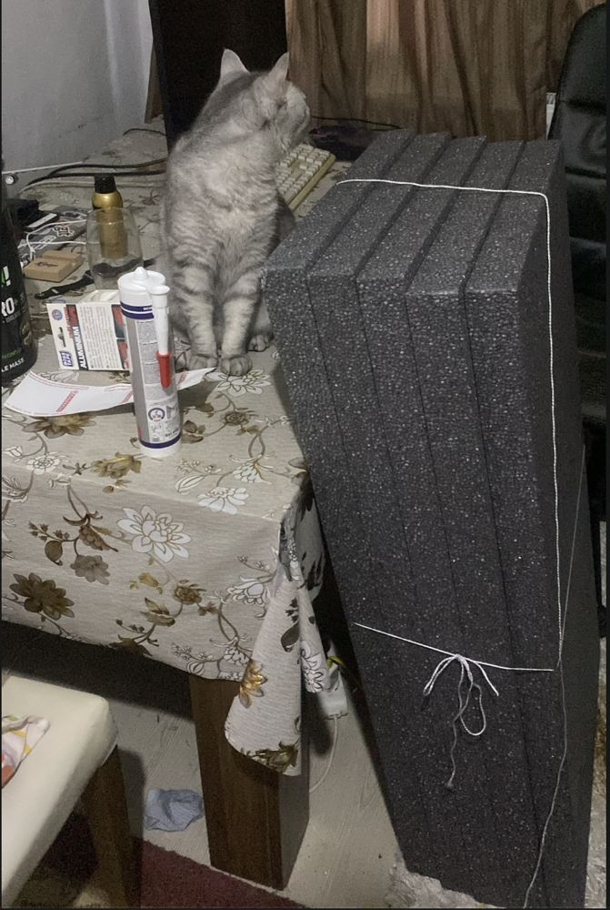
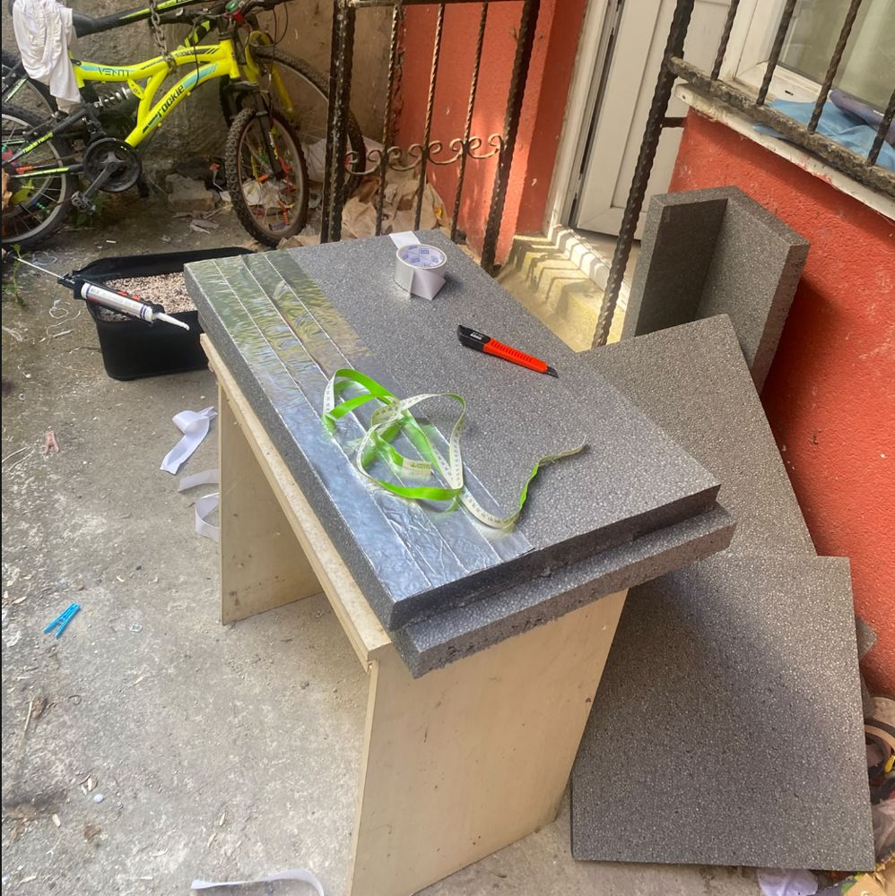
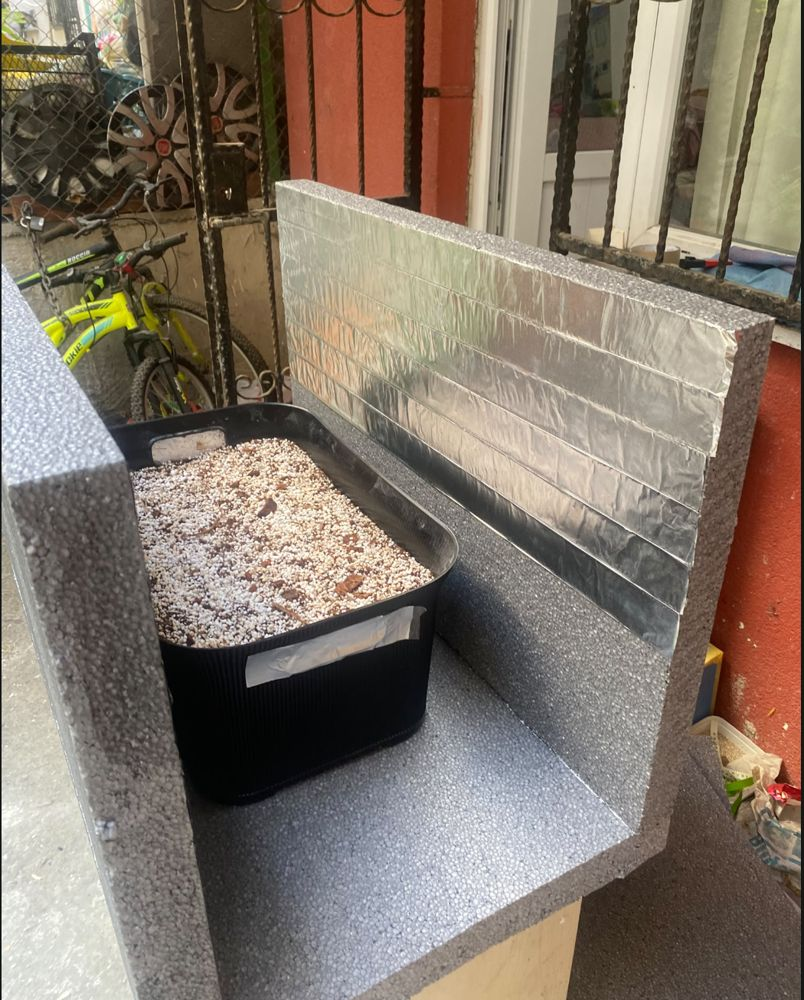
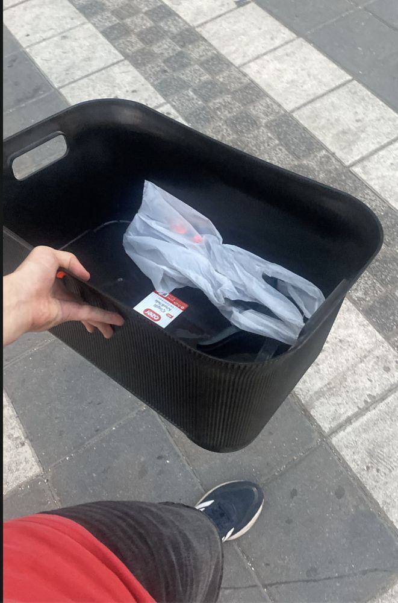
20 Ağustos: ekim
İlk 18 kormu %70 iri perlit, %15 koko yonga ve %15 yıkanmış kokopitten kendi hazırladığım karışıma, 3 × 6 düzeninde ve 5 cm derinliğe ektim. Kormun altında kökler için yaklaşık 8 cm karışım kaldı. Ekimden önce soğuk şok uygulamadım. İlk sulamayı ekimde yaptım, sonra haftada bir; çürüme olmasın diye tüm tekneye yalnızca yaklaşık yarım litre musluk suyu veriyorum, gübre yok. Kalan kormlardan 60'ı sürgün vermesin diye uyku kutusunda 25 °C'nin üstünde bekliyor. 20 kormun dış kabuğunu ve tabanını soymuştum; görünümleri bozulduğu için onları ekmedim.
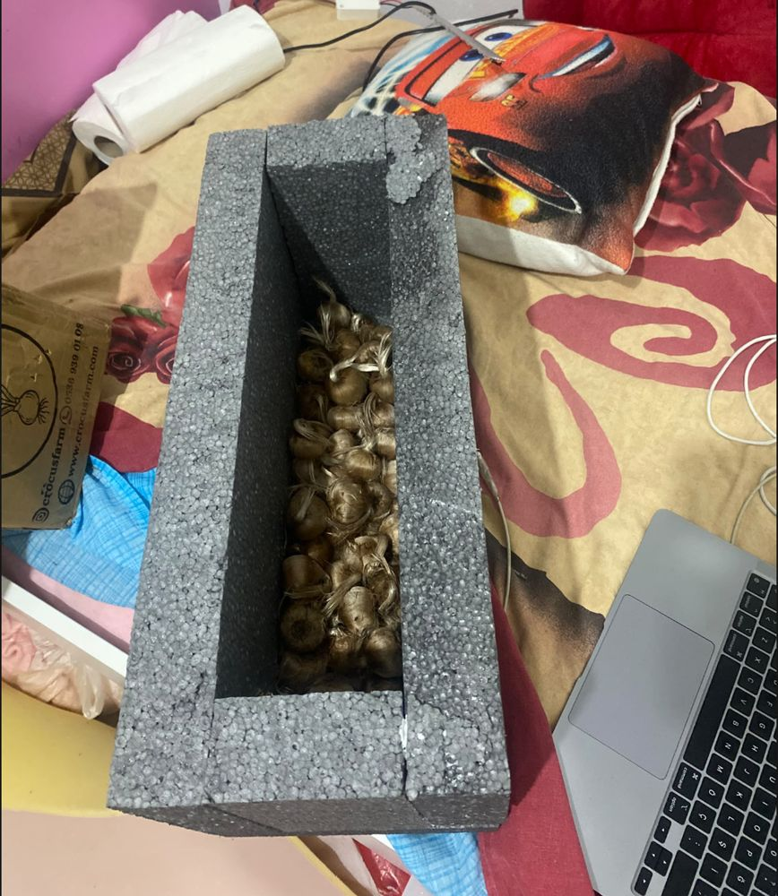
Ağustos sonu: sıcakta bekleme
Ekim günü İstanbul'da hava yaklaşık 30 °C'ydi. Kutu 22 Ağustos'ta tamamlandı ama tek Peltier bu sıcaklıkta kutuyu hedefe indiremedi. Yaklaşık üç hafta boyunca köklenme olmadı. Aşağıdaki ekran, ilk kontrol yazılımının panelinden: kutu 21,9 °C, nem %89,8.
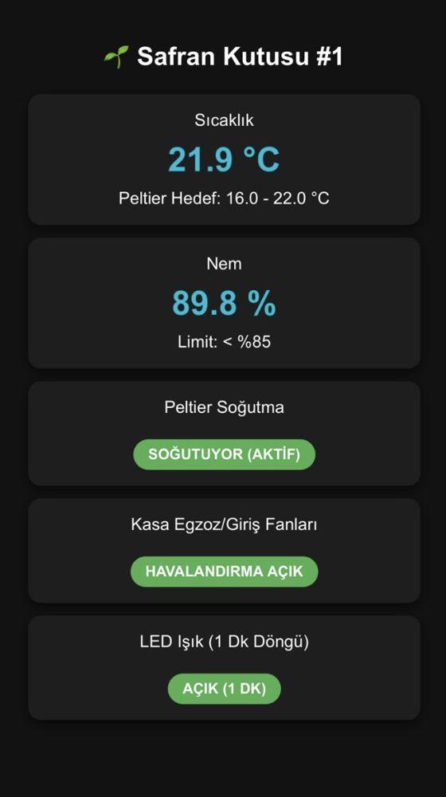
13 Eylül: ilk kökler
Hava serinleyince Peltier kutuyu 22 °C'ye, bazı gecelerde 20 °C'ye indirebildi. Tekneyi serin havadan yararlansın diye pencerenin önüne aldım. İlk kökler bu dönemde çıktı. Buradan çıkan ders: kök ve sürgün ancak sıcaklık 20–22 °C'ye inince başladı. Ekim zamanını kutunun gerçekten soğutabildiği döneme göre seçmek gerekiyor.
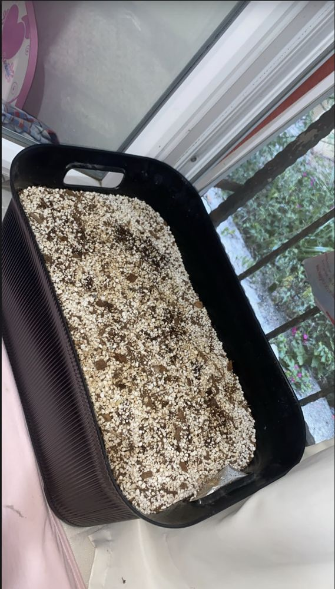
18–20 Eylül: sürgünler
18 Eylül'de ilk yeşil ikili sürgünü gördüm. 20 Eylül'de 18 kormun 16'sında sürgün ucu görünüyordu. Sürgün vermeyen iki kormu söktüm: ikisinde de kök vardı. Birinin bir yanı yumuşamıştı ve kökünün yaklaşık dörtte biri çıkmamıştı; mantar başlangıcı olabileceği için onu diğerlerinden ayırdım. Diğeri sağlam ve sertti, geri diktim.
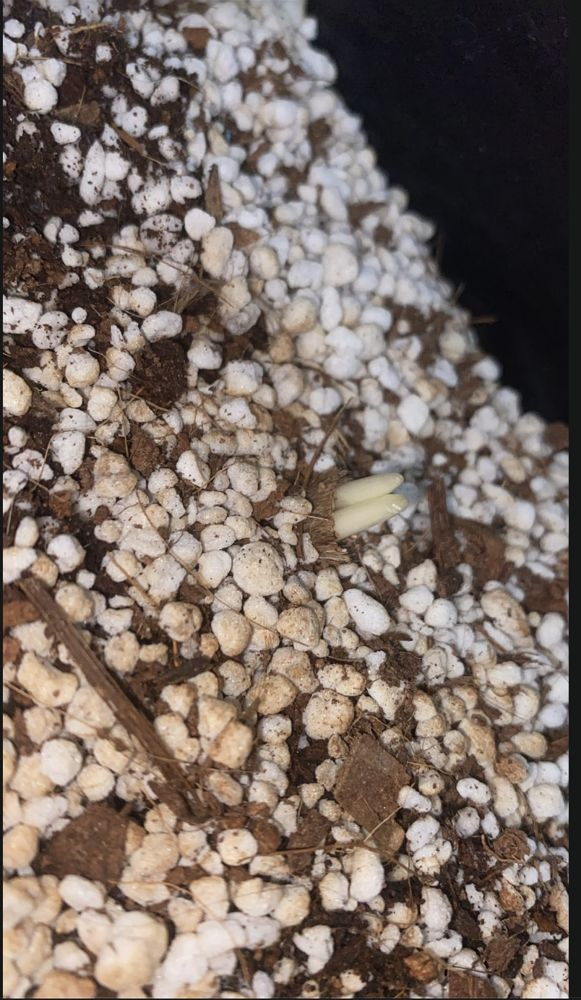
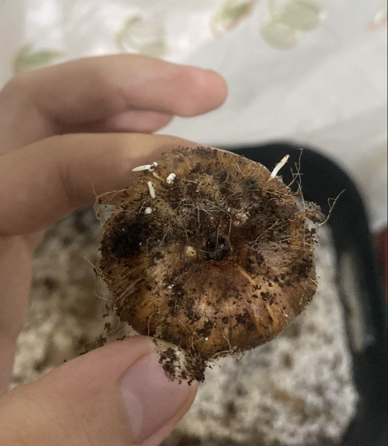
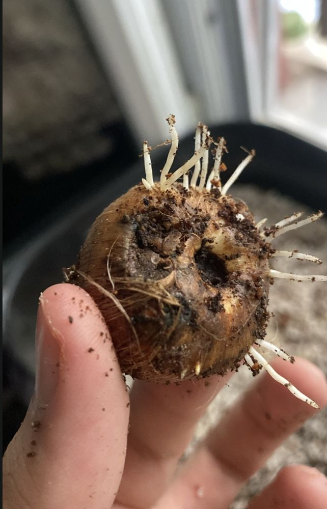
20 Eylül akşamı: ışığı açtım
Sürgünler yüzeye çıktığı için LED'leri devreye aldım. Tek çubuğun ışığı hesapta hedefin yarısında kaldığından, 120 cm'lik çubuğu ortadan kesip ikinci bir armatür yaptım ve ikisini seri bağladım. Toplam 34 LED, tek sürücü. Bu sırada sürücünün giriş ve çıkış uçlarını karıştırıp bir sürücü yaktım ve birkaç LED kaybettim. Ayrıntılar, ışık hesabı ve yanmayan çubukta arıza bulma sırası ayrı sayfada: LED armatür.
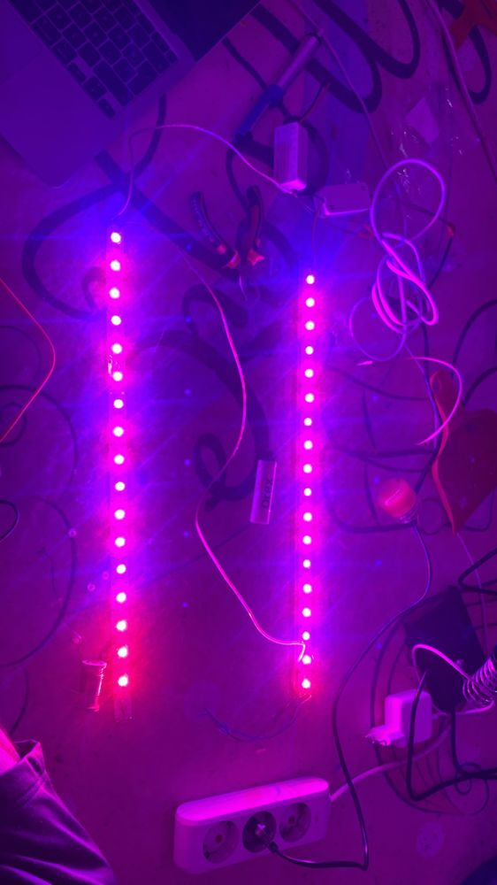
26 Eylül: sürgünler ve donanım güncellemesi
Sürgünler ilerlemeye devam ediyor. Kutunun elektrik kurulumunu yeniden yapıyorum: ikinci Peltier'i devreye alıyorum, kendi sıcak taraf fanıyla birlikte ayrı bir röle kartından besleniyor ve her zaman birinci Peltier ile aynı anda çalışacak. Kontrol yazılımına hedef sıcaklığı web panelden ayarlayabilme özelliği ekledim, artık sabit 13-17 derece yerine istediğim değeri girebiliyorum. Uyku kutusunu da bu kutudan ayırıp ayrı bir denetleyiciyle, sıcak bir odada bağımsız çalıştırmayı planlıyorum.
Sonradan not: Ekim'de hava soğuyunca ikinci Peltier'i takmadım. Uyku kutusu da sıcaklığı tutamadı ve iptal oldu; içindeki kormların hepsi sürdü, bu sezon kaydırmalı parti olmayacak.
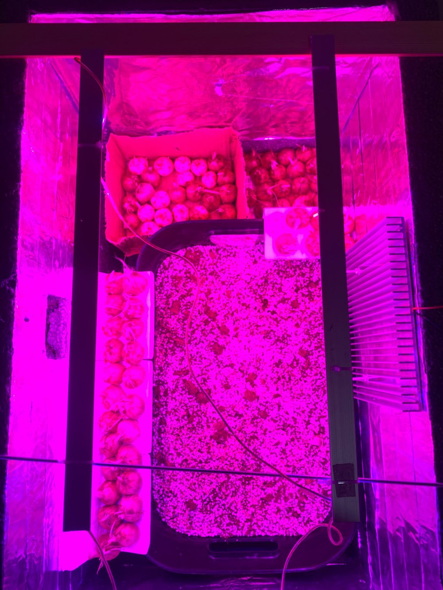

17 Ekim: toprakta olanlar ile rafta olanlar arasındaki fark
Eylül sonundan itibaren İstanbul'da hava birden serinledi. 22 Eylül'den sonra gündüz en yüksek sıcaklık çoğu gün 20 derecenin altında kaldı, 14 Ekim'deki sel getiren yağıştan sonra gece 10-13 dereceye indi. Bu yüzden ikinci Peltier'i hiç takmadım. Şu an kutuda hiçbir elektronik parça bağlı değil: soğutma yok, kontrol kartı yok, yalnızca LED'i elle prize takıp çıkarıyorum. Kutunun içi oda havasıyla birlikte soğuyor. 17 Ekim akşamı kutuyu dışarı çıkardım: önümüzdeki iki hafta için tahmin gündüz 16-21, gece 10-15 derece, çiçeklenme için protokoldeki aralığa (gündüz 15-17, gece 12-14) çok yakın. Işığı gece açıp kutunun gece fazla soğumasını önlemeyi düşünüyorum.
Aynı kutuda, aynı ışık altında iki grup duruyor. Teknede substrata gömülü 18 korm yeşil yapraklarını açtı ve uzamaya devam ediyor; bazı kormlardan 4-6 ayrı sürgün çıkıyor. Kutunun yan duvarındaki XPS strafor rafa ve karton kutulara dizdiğim kormlar ise sürgün verdi ama sürgünler birkaç santimetrede durdu, hiç yeşil yaprak açmadı. Rafta olanlar sulanmadı, üzerlerine su da püskürtmedim.
Bu fark, safranın bilinen davranışıyla uyumlu. Çiçek tomurcuğu kormun içinde yazın oluşur ve kendi depo besiniyle dışarı çıkabilir; bu yüzden bazı üreticiler kormları raflarda, topraksız çiçeklendirir. Yaprak büyümesi ve yeni (yavru) kormun oluşması ise köke ve suya bağlıdır. Rafta çiçek almak mümkün, ama ertesi yılın kormunu büyütmek için kormun çiçekten sonra toprağa ya da substrata dikilmesi gerekiyor. Raftaki kormlarda çiçek çıkıp çıkmayacağını önümüzdeki haftalarda göreceğim.

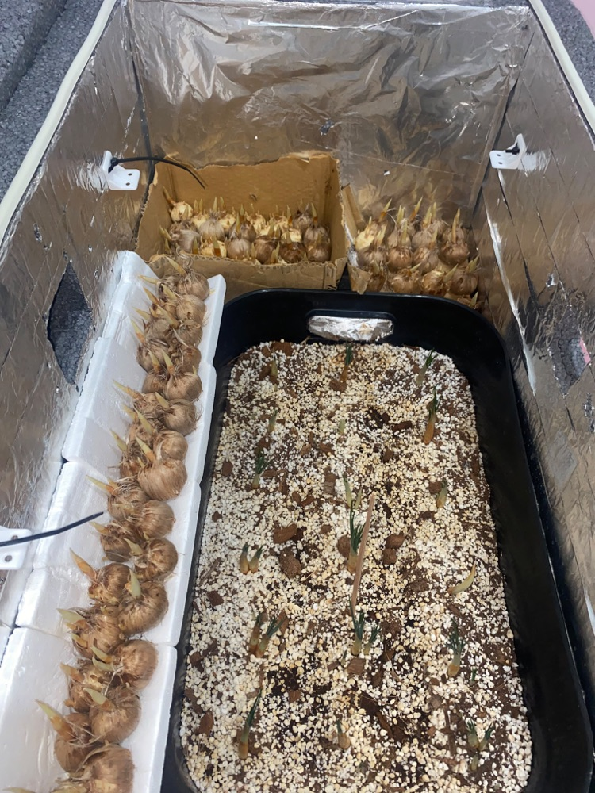

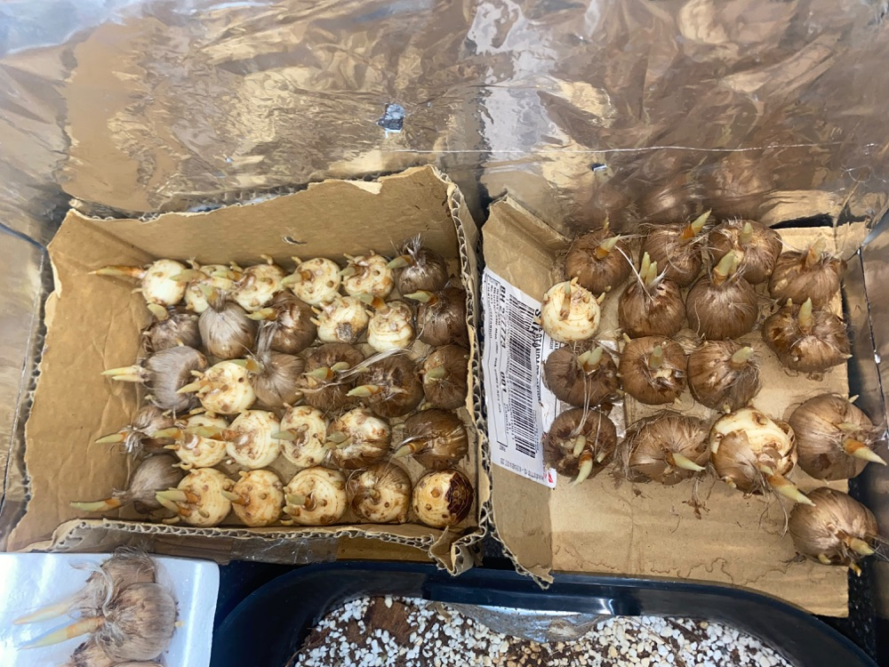

Rafta sürmeyen korm: çürüklük
Raftaki kormlardan biri dışarıdan hafif küflü görünüyordu. Kendini toparlar diye kutuda bıraktım, ama diğerleri sürgün verirken bu hiç sürmedi. Kesip içine baktım: kabuğun altında koyu kahverengi, çökük lekeler var ve çürüme dış yüzeyden içe doğru ilerlemiş, ortası ise hâlâ beyaz. Görünüş safranda en sık görülen mantar kaynaklı korm çürüklüğüne (Fusarium) benziyor; kesin tanı için laboratuvar gerekir. Kesip incelediğim için kutuya geri koymadım. Bundan çıkan ders: şüpheli kormu ilk gün ayırmak, kendi kendine düzelmesini beklememek. Kabuğu soyulmuş kormlarda yüzey açıkta olduğu için risk daha yüksek.
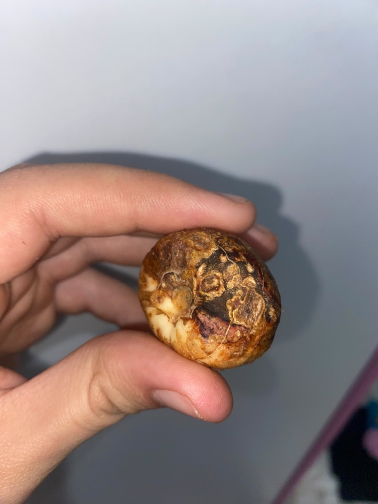
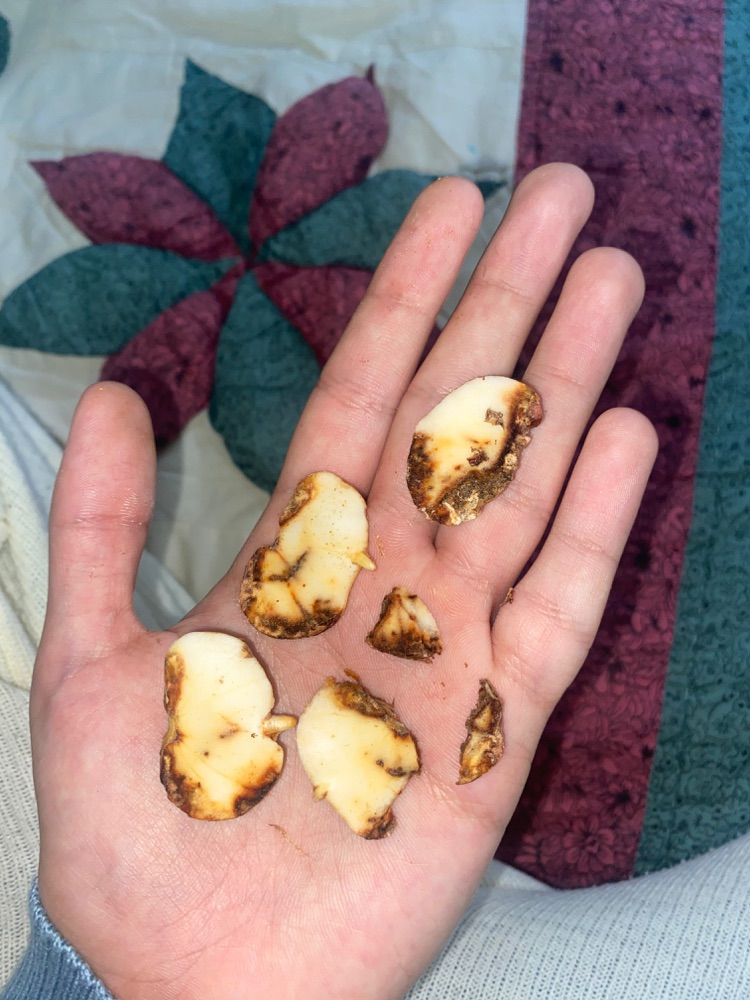
Gübre başladı
Topraksız tarım için iki parçalı (A ve B) sıvı bir genel besin aldım: GüneyDoğu Topraksız Tarım, Genel A ve B, 500 mL. Firmanın bildirdiği içerik (% ağırlıkça) şöyle:
| A besini | B besini | |
|---|---|---|
| Toplam azot (N), tamamı nitrat | 6 | 2 |
| Fosfor (P₂O₅) | - | 5 |
| Potasyum (K₂O) | 9 | 9 |
| Kalsiyum (CaO) | 6 | - |
| Magnezyum (MgO) | - | 2 |
| Demir (Fe) | 0,02 | - |
| Bor, bakır, mangan | - | 0,02'şer |
| Çinko (Zn) | - | 0,04 |
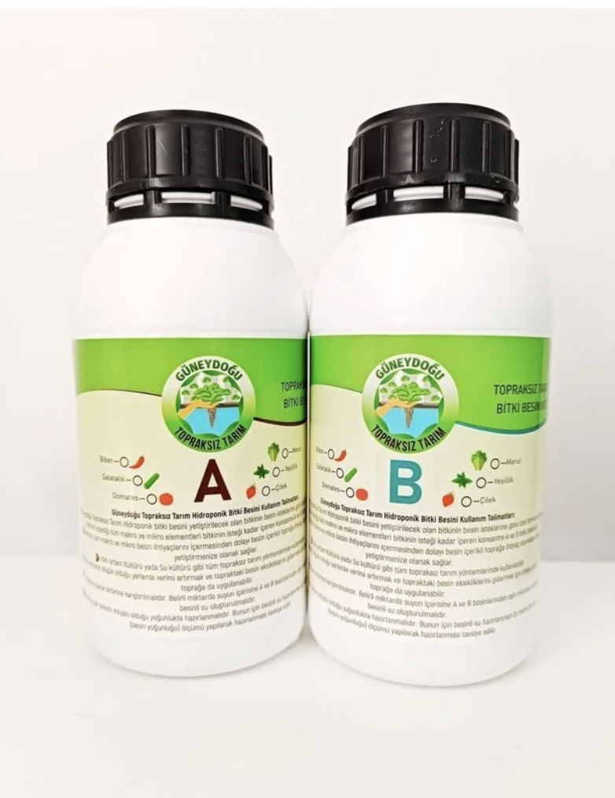
Etiketteki talimat: A ve B konsantre hâlde birbirine karıştırılmıyor, suya eşit miktarda ayrı ayrı ekleniyor. Şebeke suyuyla 250 mL besinden yaklaşık 125 L besinli su, saf suyla 100 L elde ediliyor; 1 L besin ortalama 500 L su ediyor. Bunu A ile B'nin toplamı olarak okursam musluk suyunda etiket dozu litrede 1 mL A + 1 mL B. Firma da dozun EC ölçülerek ayarlanmasını öneriyor.
1 litre musluk suyuna 2 mL A ve 2 mL B koyuyorum (toplam 4 mL), yani etiket dozunun yaklaşık iki katı. Dört günde bir, yalnız teknedeki substrata yaklaşık 600 mL veriyordum; bunun yetmediğini ertesi gün gördüm (18 Ekim). Raftaki kormlara dokunmuyorum. Henüz EC ve pH ölçemiyorum; hesapla bu doz litrede yaklaşık 160-200 mg azot ediyor, protokoldeki hedefin (9800 µM nitrat, litrede yaklaşık 137 mg azot) biraz üstünde. Demir ise hedefin (20-25 µM) epey altında, yaklaşık 7-9 µM. Etiket dozunda (1 + 1 mL) azot litrede 80-100 mg ile hedefin altında kalıyor; ikisinin arası, litrede 1,5 + 1,5 mL, hedefe en yakın doz.
18 Ekim: kökler ve teknenin kuru dibi
Bazı köklerin yüzeye doğru çıktığını gördüm. Yüzeyi hafifçe kazınca kökün iyi geliştiğini, yanlara doğru yayıldığını gördüm: kormlar arasında 7-8 cm olmasına rağmen kökler birbirine ulaşıyor. Safranın saçak kökleri toprağın üst kısmında yanlara yayılır, bu tek başına sorun değil. Ama yüzeye yakın kalmaları, suyun yalnız üst katta kaldığını da düşündürdü.
Yüzey sulamadan sonra 5-10 gün nemli kaldığı için az suladığımı düşünmüyordum. Bugün yaklaşık 1 litre gübreli su verdim, alttan hiç su gelmedi. Drenaj delikleri tıkalı mı diye alttan tahta çubuk soktum: çıkan ilk substrat ve çubuğun ucu kupkuruydu. Su teknenin dibine hiç inememiş, üstteki kokopit ve koko yonga ıslanıp suyu orada tutmuş. İkinci litreyi gübresiz verdim; bu sefer bir delikten su geldi, diğerlerinden birer ikişer damla. Toplam 2 litreden sonra dip ancak nemlendi, alttan yarım çay bardağı kadar su çıktı.
Ders: yüzeyin nemli görünmesi teknenin ıslak olduğunu göstermiyor. Dört günde bir 600 mL vermek yalnız üst birkaç santimetreyi ıslatıyormuş. Kokopit bir kez kuruyunca suyu zor alır, az su da üstten yanlara dağılıp aşağı inmez. Karışımda perlit oranının hedeflenen %70 yerine %65 civarında olması mümkün, ama asıl sebep az ve sık sulama gibi görünüyor. Bundan sonra yüzeye değil dibe bakacağım: alttan az da olsa su gelene kadar derin sulayıp, çubuk dipte kurumaya başlayınca tekrar sulayacağım. Tekneyi tartarak ne kadar su kaybettiğini de izlemeyi düşünüyorum.
20-21 Ekim: olası ilk tomurcuklar, bir günde köklenen korm ve ilk sensör kaydı
Birkaç kümenin tam ortasında, yeşil yaprakların arasından beyaz, kâğıt gibi ince ve buruşuk, sivri bir uç çıktı. Safranın çiçeği yaprak demetinin ortasından böyle beyaz bir zarın içinde çıkar; bu yüzden bunların çiçek tomurcuğu olmasını umuyorum. Kesinleşmesi için ucun uzayıp zarın içinden mor rengin görünmesi gerekiyor. Bir sürgün ise yeşil yaprak açmadan uzun, soluk sarı ve kıvrık bir kılıf olarak uzadı; içindeki yapraklar henüz ucu delip çıkamadı. Kılıfların çoğunda turuncu, pas rengi lekeler var; dokunduğumda sertler, bunu kokopitin boyası ve kılıfın yaşlanması olarak görüyorum.
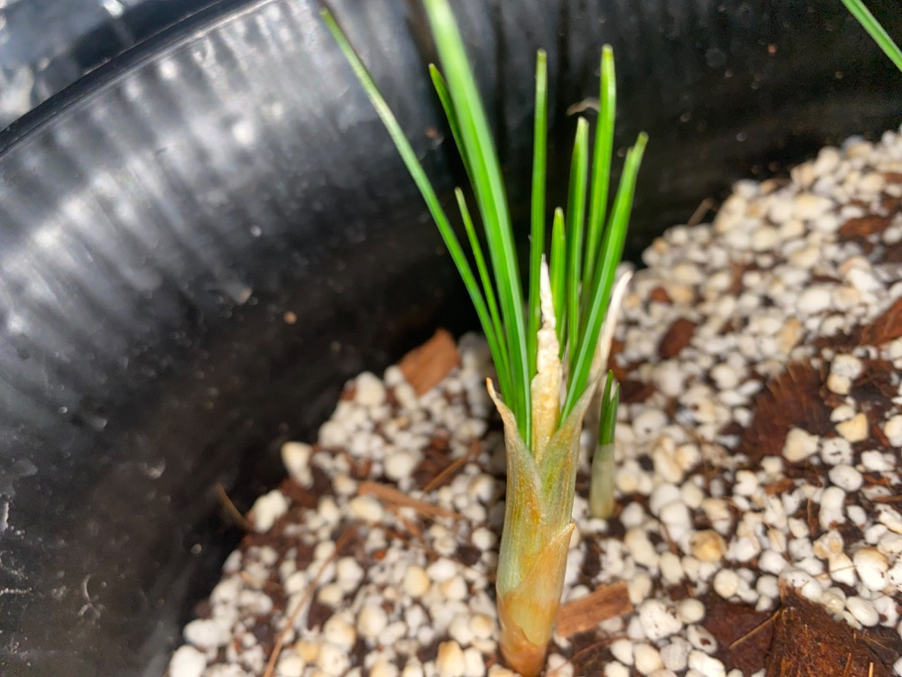
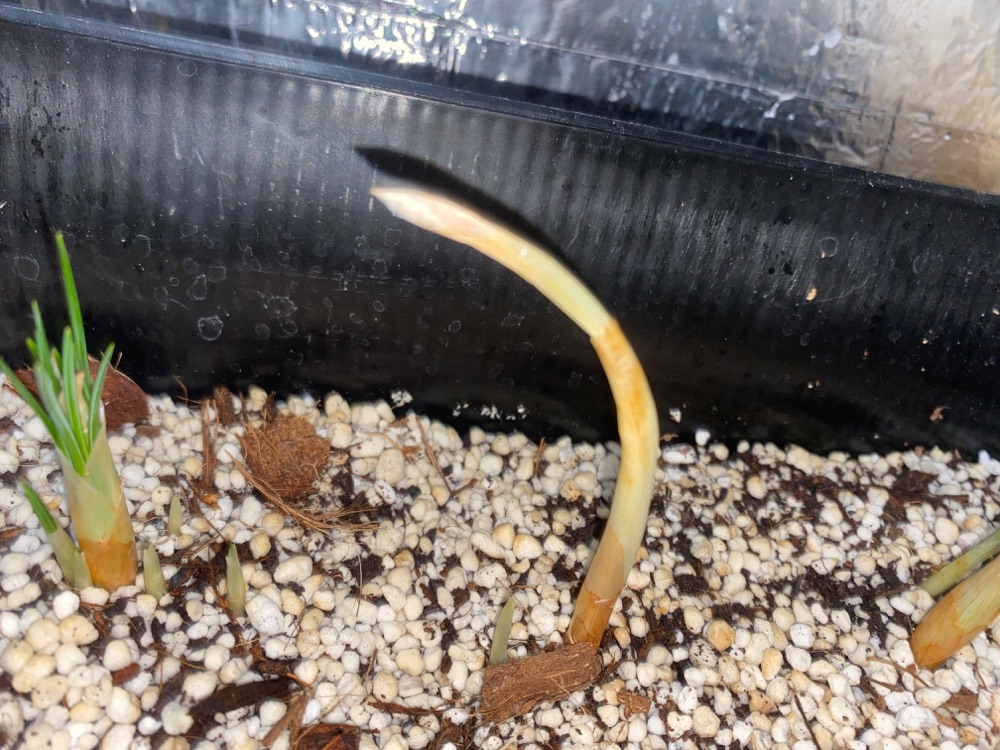
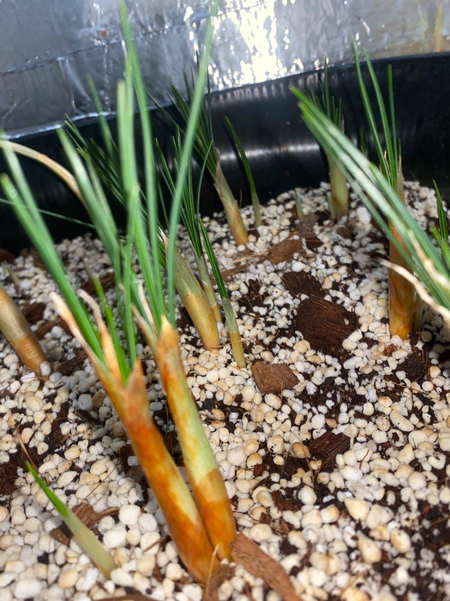
Raftan yanlışlıkla substrata koyduğum korm
Raftaki kormlardan birini yanlışlıkla teknedeki substratın üstüne bırakmışım. Bir gün sonra kaldırdığımda kök tablasının çevresinde onlarca beyaz kök ucu çıkmıştı. Rafta haftalardır bekleyen korm, nemle karşılaşır karşılaşmaz köklenmeye başladı. Bu, raftakilerin sürgünlerinin neden birkaç santimde durduğunu da açıklıyor: kök olmadan su alamıyorlar. Raftaki kormları beklemeden, bu hafta dikmeye karar verdim.
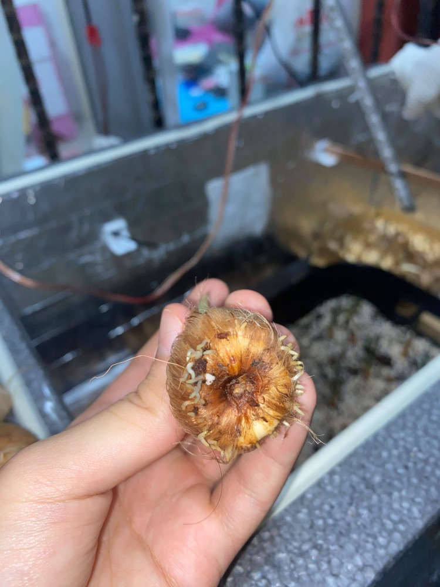
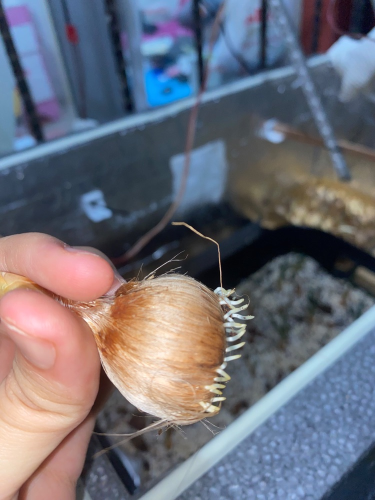
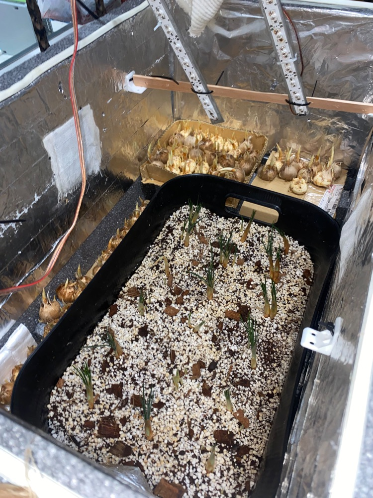
Sensörler bağlandı
21 Ekim gecesi kontrol kartını yeniden devreye aldım. Şimdilik sade bir kurulum: kutu içinde bir sıcaklık ve nem sensörü, balkonda bir dış sensör, sıcaklığa göre çalışan bir egzoz fanı, sürekli dönen bir iç fan ve telefondan açılan bir panel. Kart her 15 dakikada bir ortalamaları kendi belleğine yazıyor. İlk günün grafiği:
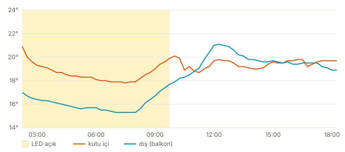
Gece LED yanarken kutu, egzoz fanı sürekli çalışmasına rağmen dışarıdan 2-3 derece sıcak kaldı ve sabaha karşı 17,8 dereceye indi. LED'i saat 10'da kapatınca kutu birkaç dakikada bir derece düştü ve gündüz dış havayla neredeyse aynı sıcaklıkta seyretti. Gece LED'in ısısı, gündüz de dış hava belirleyici. Gündüz kutu içi nem yüzde 85'e çıktı; dış hava daha kuru olduğu için egzozu açınca 12 dakikada yüzde 79'a indi. Sıradaki adım, kutuyu dış havanın da altına indirmek için Peltier soğutucuyu takmak.
27 Ekim: ilk çiçekler
İki gün tekneye bakmamıştım. 27 Ekim akşamı saat 18:30'da kapağı açtığımda teknede mor çiçekler gördüm. Ekimden bu yana 68. gün. 20 Ekim'de yaprak demetlerinin ortasında gördüğüm beyaz, buruşuk uçlar gerçekten çiçek tomurcuğuymuş: zarın içinden mor taç yapraklar çıktı. Bazı kümelerden iki çiçek birden geliyor. Akşam olduğu için çiçeklerin çoğu kapalıydı. Mor yaprakların üzerinde koyu damarlar belirgin.
Çiçeklenmeden önceki günlerde kutu içi sıcaklık düştü: 25-26 Ekim'de 18-20 derece civarındaydı, 27 Ekim sabahı 14 dereceye indi. Bu, safranda çiçeği tetiklediği bilinen sıcaklık düşüşüyle uyumlu, ama tek bir gözlemden kesin sonuç çıkarmıyorum.
Bir saat sonra zorunlu bir yolculuk için İstanbul'dan ayrılmam gerekti ve 1 Kasım'a kadar evde değilim. Bu yüzden ilk çiçekleri hasat edemedim. Döndüğümde bazılarının solmuş olacağını, ama yeni çiçeklerin de açmış olacağını düşünüyorum. Kutu bu sürede kendi başına çalışıyor: ışık 22:00-10:00 arası, egzoz ve sıcaklık kontrolü otomatik.
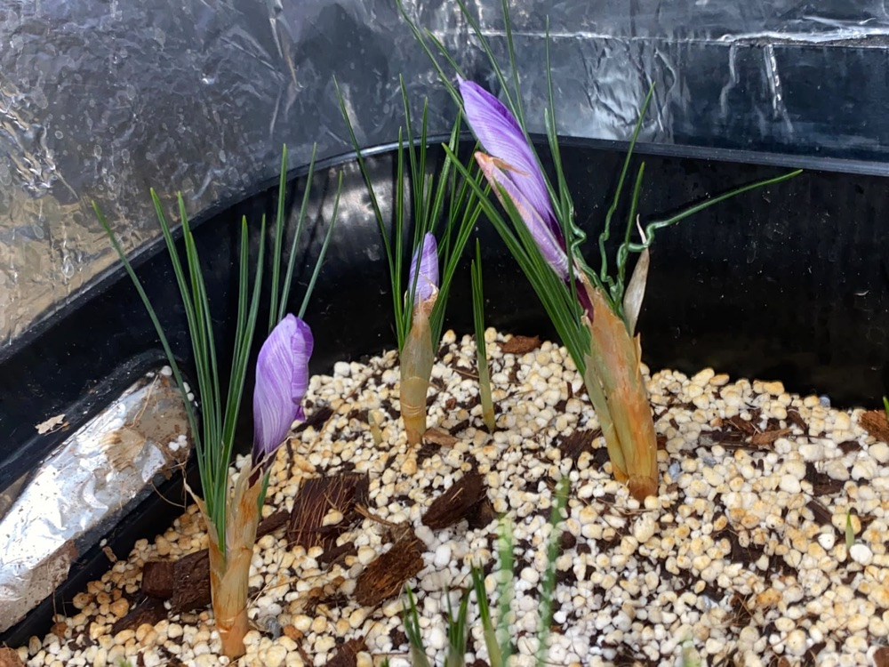
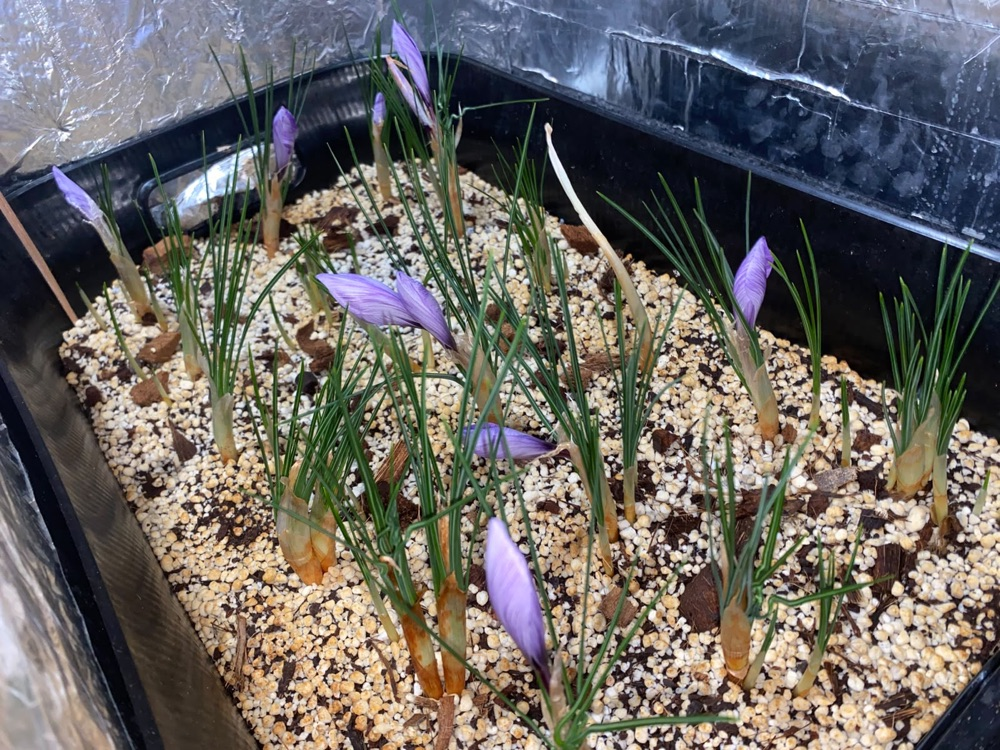
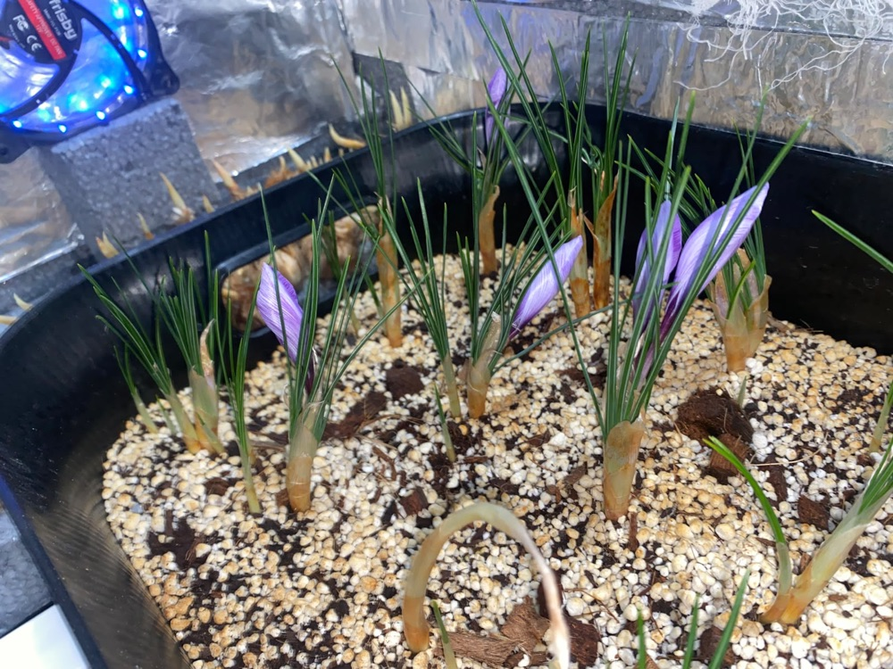
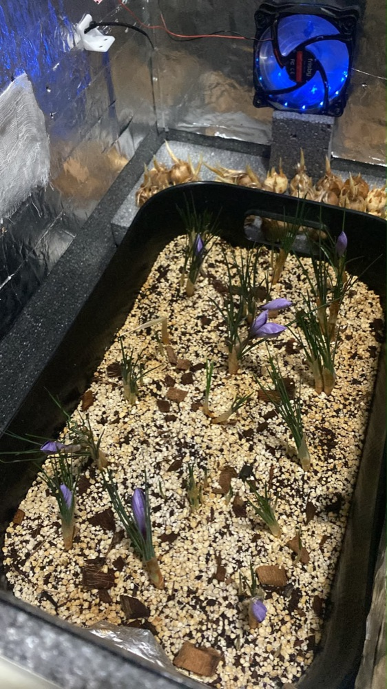
Sıradaki adımlar
- Döndüğümde çiçekleri saymak, açan ve solan çiçeklerin tarihlerini not etmek.
- Yeni açan çiçeklerin stigmalarını sabah toplayıp tartmak, kurutup tekrar tartmak.
- Raftaki kormları tartıp sayarak 8-10 cm derinliğe dikmek.
- Peltier soğutucuyu ve LED'in zaman rölesini bağlamak.
- Dikmeden önce raftaki kormlarda en güçlü 2-3 tomurcuğu bırakıp küçük yan tomurcukları almak; teknedekilere dokunmadan iki grubu karşılaştırmak.
- Kutuya basit bir termometre ya da yalnız sensörlü kontrol kartı koyup sıcaklığı kaydetmek.
- EC ve pH kalemi gelince gübre dozunu ölçerek ayarlamak.
- Yüzeye çıkan köklerin üstüne aynı karışımdan 2-3 cm eklemek; tekneyi drenaj delikleri kapanmasın diye çıtalar üstüne kaldırmak.
- Sulamayı takvime göre değil, çubukla dibi ve tartıyla ağırlığı kontrol ederek yapmak.